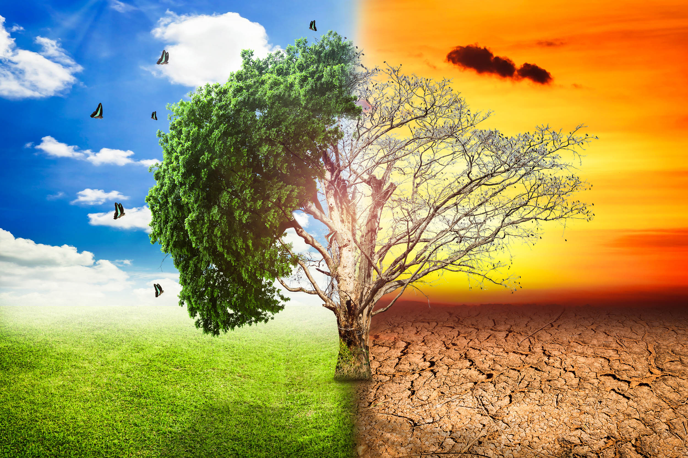

Sustainability In Your Ear: CurbWaste’s Mike Marmo Is Building the Waste Logistics Layer of the Circular
The U.S. waste management industry moves more than 290 million tons of municipal solid waste each year.
This is a potential trillion-dollar market, but much of the work still relies on paper tickets, clipboards, and spreadsheets.
About 10,000 independent haulers handle a large share of collection and materials transfer in the U.S. In this business,
a single truck costs $300,000, and profits depend on efficient routes. Most haulers do not have access to the digital tools
that other logistics industries have used for years. Mike Marmo, CEO and founder of CurbWaste, is building a new operating system to change this.
His goal is to create the data foundation needed for the circular economy to work. He is a fourth-generation waste industry professional who started
his career as a scale operator at a family transfer station in New York and sold a hauling business in 2021. Since then, he’s built CurbWaste
into a platform serving more than 150 haulers in 40 states. Its CurbPOS system for transfer stations tracks inbound and outbound materials with scale integration.
It generates automated LEED diversion reports and Recycling Certification Institute-certified documentation; the per-load, per-material chain-of-custody data
that extended producer responsibility programs need, as seven states now require producers to fund and document the recycling of their packaging.